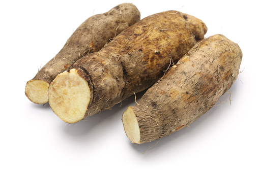

1. Seasons for Growing Yams

Yams are tropical root crops that thrive in warm, humid climates. The best seasons for growing yams are:
- Rainy Season: Yams are typically planted at the onset of the rainy season (April to May) for optimal growth.
- Dry Season: In areas with irrigation, yams can also be planted during the dry season.